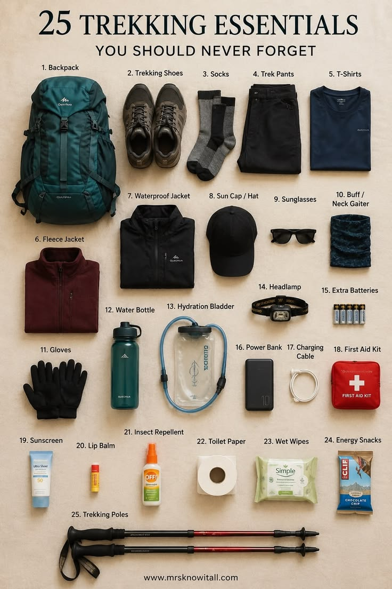

Daftar Perlengkapan

Sumber gambar: www.mrsknowitall.com
Perlengkapan wajib
- Sepatu atau sandal gunung yang nyaman
- Jaket dan jas hujan
- Headlamp
- Air minum minimal 2 liter per orang
- Obat pribadi dan P3K
- Kantong sampah untuk dibawa turun
Aturan di Jalur
- Lapor dan registrasi sebelum memulai pendakian.
- Tetap berada di jalur resmi.
- Bawa turun semua sampah.
- Turun lebih awal jika cuaca memburuk.
Jika perlengkapan sudah siap, lanjutkan ke halaman Registrasi.